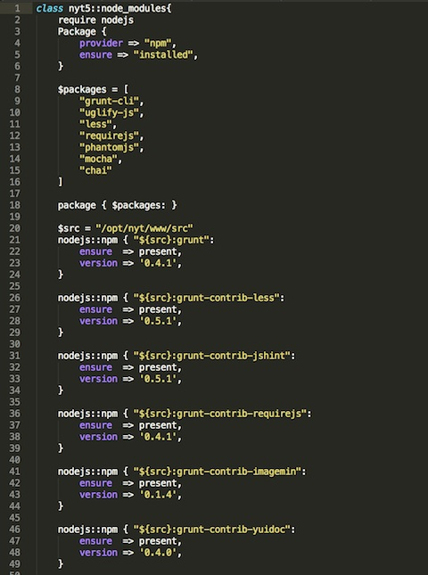
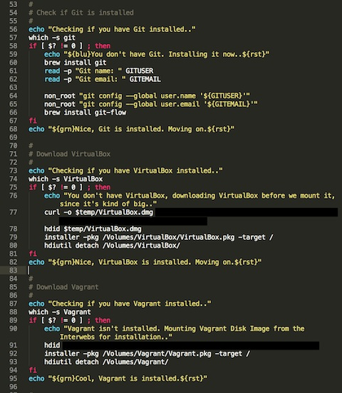

也紀念我們永遠的朋友 李士傑先生（Shih-Chieh Ilya Li）。
在沙箱中思索
紐約時報 (New York Times) 的技術部門正不斷地往前演進，以我在這裡大約 1 年的時間，已經觀察到許多重大改變。對於一間大型且非常古老的組織，我發現這間公司卻很創新，願意冒風險保持在技術最尖端。不過，在內部的確有一些領域我們並未挑戰技術極限，在用以建構我們網站的開發環境上，我們的腳步落後許多。雖然有過多次重整的嘗試，但因為時機不對而作罷。但隨著 NYTimes.com 的重新設計，我終於有絕佳機會改變我的同事們與我工作的基礎面向。
我做了什麼
在打造適當開發環境時，我考慮了若干選項：
- 使用 Apache、PHP、Node 與我的網路應用程式所需套件，讓我的電腦成為網路應用伺服器。
- 啓用某些雲端運算實體如 Amazon EC2，安裝我的套件，然後用像 Macfusion 的工具把實體掛成本地檔案系統。
- 在我的桌面作業系統上，用 VirtualBox 這類虛擬機器工具模擬生產環境。
我選擇第三條路。在為大型企業級應用程式時，我希望確保我在開發中做的測試，能夠好好地顯示我對程式碼的更動，在開發環境會如何運作。我也希望極力確保它會在生產環境中如預期般運作。使用 VirtualBox 能夠讓我有自信做到這點。
實現信心
我如何打造出我相信可以在生產環境運作的應用程式，且避免陷入搜尋我無法重製的臭蟲？我所做的是削減變數（不是程式設計裡的那種變數）。這些變數會造成我的開發環境與生產環境間的不一致。它們會使得我的應用程式在某環境下運作順暢，但在另一種環境下卻頻出問題。
我的程式碼要順暢運作，有賴於若干套件與軟體。當這些依賴關係在開發與生產環境間不一致時，我就無法確定我的應用程式可以正常運作。
案例
例如，我要在本機建立應用程式（我的電腦安裝了 PHP 5.4），然後部署到開發伺服器（安裝了 PHP 5.3），我可能會碰上驚人驚訝的狀況。我用 JavaScript 開發者熟悉的簡單括號語法撰寫我的陣列：[value1, value2]。雖然在我的機器上運作無誤，在開發機上卻突然丟出錯誤。
這是因為該語法從 PHP 5.4 才引入。早期的 PHP 版本建立陣列必須使用關鍵字 array：array (value1, value2)。
想像一下這類問題在程式碼中層出不窮，真是惡夢。避免這類變數的一個方法，是用虛擬機器建立複製生產環境的開發環境。
如何運作
使用虛擬機器跑應用程式不是新點子。有許多工具可以幫助開發者建立與管理虛擬機器。我用的是 Vagrant、VirtualBox、Puppet、Git。
在生產環境，我們用 CentOS 當作應用程式的作業系統容器 (container)。當然，我們的虛擬機器上也應該跑同樣的作業系統。作為第一步，我用該作業系統做了一個 Vagrant box。Vagrant 讓用戶很方便地透過簡單指令，包裝並分享虛擬機器映像。使用 Vagrant，我包了一個跑在 VirtualBox 虛擬環境上的 CentOS box。我可以很容易地把它放在檔案伺服器上，分享給我的團隊成員。
這關鍵的第一步是確保我們在不同環境間，在套件與組態設定上擁有一致性支援。現在，當我在我的虛擬機器上安裝像 Node 或 PHP 等軟體時，我能更確信它的運作會和生產環境如出一轍。
不過在虛擬機器上安裝每個個別套件，並手動設定組態，是一件累人的工作。不僅是如此，當我把虛擬機器分享給團隊時，如果我稍後更改了組態設定呢？我要叫每個人都手動更改設定嗎？還是我要另建一個新映像再分享給所有人，強迫團隊成員在我每次更改設定時都要下載一次龐大的映像檔？聽起來不是好選擇。幸好，有更好的方法。
使用 Puppet
Puppet 是一套讓開發者透過名為 Puppet manifests，聲明 Unix 系統組態的工具。藉由 Puppet manifests，我可以任意設定我的虛擬機器。由於 Puppet manifests 只是用 Puppet 的宣告式語言寫成的簡單文字檔，我可以在 Git 追蹤這些檔案，並分享給我的同事。
這表示如果我用 Puppet 安裝 Node 的模組如 0.4.0 版的 Grunt，但之後我需要更新至 0.4.1，我只要在 Puppet manifest 裡把版本號給改掉，提交 (commit) 並推送 (push) 改變，並要求團隊拉取 (pull) 改變並在其環境中執行 Puppet。Vagrant 提供方便的指令在虛擬機器中執行 Puppet：vagrant provision。這是個讓我們依需更改虛擬機器的簡單程序。

圖片來源：https://open.blogs.nytimes.com/2013/09/10/thinking-inside-the-sandbox/?_r=0
這個強大功能能抹煞掉一大堆變數。這麼一來，我就能確信，我虛擬機器上的套件與組態，和我的團隊、開發環境、生產環境都完全相同。因此，我能預期我的應用程式在不同環境間，獲得一致性的支援。
最後，我寫了一支 Bash 腳本來下載並安裝所有所需的軟體。該 Bash 腳本安裝了 Git、VirtualBox、Vagrant，複製我們的核心應用程式代碼庫，並執行其他幫助開發者更快進入狀況的工作。

圖片來源：https://open.blogs.nytimes.com/2013/09/10/thinking-inside-the-sandbox/?_r=0
藉由完成上述步驟，我已經建立起仿造生產環境的全自動化沙箱 (sandbox)。我可以輕易分享、更改它，更重要的是，確信能依賴它。
進階閱讀
為了減輕軟體開發與部署上的問題，不斷地有新的解決方案出現。其中，我覺得 Vagrant 可說是勝利者。不過，有其他工具也值得一看，像是 Docker 與 Packer。它們打算從根本改變我們部署軟體的方式，選擇將應用程式部署為容器或機器映像，完整地包起所有相依軟體。這是另一種不同的軟體交付範式，我希望我未來有機會加以探索。
結論
軟體開發並不簡單。我們可以透過採行聰明的標準、撰寫組織良好的程式碼、與團隊有效溝通、使用正確工具，來讓事情簡單一些。最關鍵的工具之一，是一個精心打造的沙箱，這也是起頭的好地方。
◎本文翻譯自 The New York Times，原作者為 Omar Niazi：
https://open.blogs.nytimes.com/2013/09/10/thinking-inside-the-sandbox/?_r=0
專欄總覽


E-Mail：contact@openfoundry.org Address：台北市南港區研究院路2段128號 中央研究院資訊科學研究所 . 隱私權條款. 使用條款